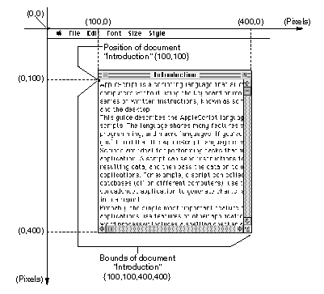

Document/Window
A document object is an open Scriptable Text Editor document. The window and document objects have the same elements and properties. They can be used interchangeably.PROPERTIES
Bounds- The rectangle that bounds the content region of the window (the portion of the window that contains the text of the document; the "window frame"--the title bar and scroll bars--are not part of the content region).
Class: List of four integers. The first two integers specify the coordinates of the upper-left corner of the window, and the last two integers specify the coordinates of the lower-right corner of the window. (For information about window coordinates, see "Notes" later in this section.)
Modifiable? YesClosable- A Boolean parameter that indicates whether the window has a close box. The value
truespecifies that the window has a close box, and the valuefalseindicates that it doesn't. All Scriptable Text Editor windows have close boxes.
Class: Boolean
Modifiable? NoContents- All the text contained in the window.
Class: Text
Modifiable? YesFloating- A Boolean parameter that indicates whether the window is a floating window (a window that appears in front of all other windows). The value
trueindicates that the window is a floating window, and the valuefalseindicates that it isn't. No Scriptable Text Editor windows are floating windows.
Class: Boolean
Modifiable? NoIndex- The number of the window (
window 1is the frontmost window,window 2is the window immediately behindwindow 1, and so on).
Class: Integer
Modifiable? YesModal- A Boolean parameter that indicates whether the window is modal (one that requires a response from the user before the user can perform any other tasks). The value
trueindicates that the window is modal, and the valuefalseindicates that it isn't. No Scriptable Text Editor windows are modal.
Class: Boolean
Modifiable? NoModified- A Boolean parameter that indicates whether the document has been modified since it was last saved. The value
trueindicates that the document has been modified, and the valuefalseindicates that it hasn't.
Class: Boolean
Modifiable? NoName- The name of the window (see "Notes" later in this section).
Class: Text
Modifiable? YesPosition- The upper-left corner of the content region of the window (the portion of the window that contains the text of the document; the "window frame"--the title bar and scroll bars--are not part of the content region).
Class: List of two integers that specify the coordinates of the upper-left corner (for information about window coordinates, see "Notes" later in this section).
Modifiable? YesResizable- A Boolean parameter that indicates whether the window can be resized. The value
trueindicates that the window can be resized, and the valuefalseindicates that it can't. All of the Scriptable Text Editor's windows can be resized.
Class: Boolean
Modifiable? NoSelection- The text selected in the window.
Class: Selection
Modifiable? YesTitled- A Boolean parameter that indicates whether the window has a title bar. The value
trueindicates that the window has a title bar, and the valuefalseindicates that it doesn't. All Scriptable Text Editor windows have title bars.
Class: Boolean
Modifiable? NoVisible- A Boolean parameter that indicates whether the window is visible. The value
trueindicates that the window is visible,
and the valuefalseindicates that it isn't.
Class: Boolean
Modifiable? NoZoomable- A Boolean parameter that indicates whether the window can be zoomed. The value
trueindicates that the window can be zoomed, and the valuefalseindicates that it can't. All of the Scriptable Text Editor's windows can be zoomed.
Class: Boolean
Modifiable? NoZoomed- A Boolean parameter that specifies whether the window is full size or not. The value
truespecifies that the window is full size, and the valuefalsespecifies that it is not.
Class: Boolean
Modifiable? YesELEMENT CLASSES
See "Elements of Text Objects" on page 314 for a general discussion of these element classes.
- Character
- Characters contained in the document
- Paragraph
- Paragraphs contained in the document
- Text
- Series of characters contained in the document
- Text Item
- Text items contained in the document (see "Elements of Text Objects" on page 314)
- Word
- Words contained in the document
COMMANDS HANDLED
Close, Copy, Count, Delete, Duplicate, Exists, Get, Make, Move, Print, Revert, Save, Select, SetDEFAULT VALUE CLASS RETURNED
None; use Contents property to get the data of a document.EXAMPLE
tell document "Colossal" of app "Scriptable Text Editor" delete paragraphs 1 thru 10 end tellNOTES
The window and document object classes can be used interchangeably. This
is because each open document has a window, whose elements and properties are always the same as those of its document. For example, if the first open document is named Giant, the first window is also named Giant. A Scriptable Text Editor document and its window contain the same text elements, so references to text elements in a document and its window can be used interchangeably. For example,word 1 of document "Giant"andword 1 of window"Giant"refer to the same word.Both the Bounds and Position properties are specified in terms of points on the display. The Position property contains a single point: the upper-left corner of the window's content region (the portion of the window within the "window frame" made up of the title bar and scroll bars). The Bounds property contains two points: the upper-left corner of the content region followed by the lower-right corner. In AppleScript, points are specified by pairs of integers known as coordinates. The first coordinate in the pair, known as the x-coordinate, specifies the distance from the left edge of the display to the point. The other coordinate, known as the y-coordinate, specifies the distance from the top of the display to the point. (These distances are measured in pixels, which are the picture elements that make up the display.) Figure B-1 illustrates the Bounds and Position properties of a sample window.
Figure B-1 Bounds and Position properties of a Scriptable Text Editor window

You specify points in AppleScript with lists. Figure B-1 shows that the point for the Position property is specified by the list
{100, 100}. The first item in this list is the x-coordinate value of the point, and the second is the y-coordinate value. The figure also shows that the Bounds property is specified by the list{100, 100, 400, 400}. You specify the two points that define a rectangle in a single list. In this list,{100, 100}are the coordinates of the upper-left corner, and{400, 400}are the coordinates of the lower-right corner.Although the object class defined for the Bounds and Position properties is List, the Scriptable Text Editor actually stores Bounds and Position property data in a different form. To get Bounds or Position data as a List, you must copy the data to AppleScript. For example,
copy (Bounds of front window) to x get item 2 of xreturns the y-coordinate of the upper-left corner of the window, butget item 2 of (Bounds of front window)returns an error.The Name property of a document is an object of class Text. You can change the characters of the name of a document, but unlike other objects of class Text, you cannot change its Font, Size, or Style properties.